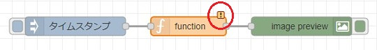
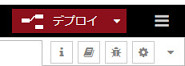

Node-RED（というかJavaScript）で画像処理を簡単に行いたい場合、「Sharp」モジュールを使うのが良いと思います。
インストール手順
Node.js バージョン12系／14系も、次のコマンドでインストールすることができます。
> npm install -g sharpNode-REDのバージョン1.3以降の「Functionノードにおける外部npmモジュールの簡単に利用できる」機能を使えば、簡単に使えます。
ただし、「nrlint」モジュール（lint機能）とは相性が悪いようです。

こんな警告がでます。しかし、普通に動作するので、右クリックして、このノードもしくはフローにおいて無視（ignore）設定しましょう。
サンプルフロー
まず、右上の  マークをクリックし、「パレットの管理」を選択してください。「node-red-contrib-image-output」がインストールされていなければ、「ノードを追加」⇒「ノードを検索」⇒「node-red-contrib-image-output」で追加してください。
マークをクリックし、「パレットの管理」を選択してください。「node-red-contrib-image-output」がインストールされていなければ、「ノードを追加」⇒「ノードを検索」⇒「node-red-contrib-image-output」で追加してください。
次に、以下のようにノードを配置し接続します。
- ①「inject」ノード
- 単純にトリガーするためのノードです。
- ②「Function」ノード
c:/tmp/lena.jpg（適当に書き換えてください）を読み込んで、ぼかし処理をし、バッファー変換します。- ③「image」ノード
- 単純に配置するだけです。画像表示用。
配置と接続が終了したら、「デプロイ」ボタンを押します。

①「inject」ノードのボタンを押すと、「image」ノードの下に画像が表示されます。
以下はフローをJSON形式で書き出したものです。以下をコピーして、Node-REDの右上の マークをクリックし、
「読み込み」で開いたテキストボックスにペーストしてください。上のフローを読み込むことができます。
[
{
"id": "b4ef144d424bce74",
"type": "inject",
"z": "c2f97dc56d34ab2d",
"name": "",
"props": [
{
"p": "payload"
},
{
"p": "topic",
"vt": "str"
}
],
"repeat": "",
"crontab": "",
"once": false,
"onceDelay": 0.1,
"topic": "",
"payload": "",
"payloadType": "date",
"x": 200,
"y": 120,
"wires": [
[
"a2f6f3adcb37ef37"
]
]
},
{
"id": "a2f6f3adcb37ef37",
"type": "function",
"z": "c2f97dc56d34ab2d",
"name": "",
"func": "msg.payload = await sharp(\"c:/tmp/lena.jpg\")\n .blur(10)\n .toBuffer();\n\nreturn msg;",
"outputs": 1,
"noerr": 0,
"initialize": "",
"finalize": "",
"libs": [
{
"var": "sharp",
"module": "sharp"
}
],
"x": 380,
"y": 120,
"wires": [
[
"7c7a4c1120d017a7"
]
]
},
{
"id": "7c7a4c1120d017a7",
"type": "image",
"z": "c2f97dc56d34ab2d",
"name": "",
"width": 160,
"data": "payload",
"dataType": "msg",
"thumbnail": false,
"active": true,
"pass": false,
"outputs": 0,
"x": 560,
"y": 120,
"wires": []
}
]